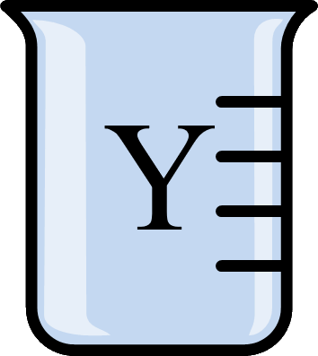
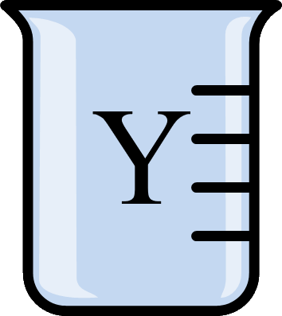

Praktiskajam uzdevumam nepieciešamie trauki un vielas: 3 vārglāzītes, 3 šķīdumi X,Y,Z (viens satur no NaOH šķīdumu, otrs CH3COOH, un trešais ir ūdens), univerālindikatora papīrīši.
pH ir negatīvais decimāllogaritms no ūdeņraža jonu koncentrācijas. Šo mērvienību lieto, lai noteiktu šķīdumu skābumu vai baziskumu. pH = -lg([H+]).
Indikatori ir dažādas organiskas vielas, kas ir spējīgas mainīt krāsu atkarībā no vides pH. Piemēram, šajā darbā izmantotais universālindikators ir dažādu indikatoru (fenolftaleīna, metilsarkanā, bromtimolzilā) maisījums, kas ļauj panākt pH noteikšanu daudz plašākā diapazonā (0-14), nekā ar atsevišķiem indikatoriem. Indikatoru darbības princips - indikators protolīzes dēļ var dažādās vidēs pastāvēt gan molekulārajā, gan jonu formā, kurām ir atšķirīgas krāsas.
- Sarkanā kāposta ekstrakts, kas satur antociānu pigmentus, var kalpot kā dabiskais indikators un darbojas līdzīgi kā universālindikators.
- Šāda vides pH mērīšana ir iespējama tikai kvalitatīviem nolūkiem un ar bezkrāsaniem šķīdumiem, taču daudz precīzākus pH mērījumus var panākt ar instrumentālām metodēm (pH-metriem).
- pH diapazons 0-14 ir lietojams tikai ūdens šķīdumiem, taču dažādos organiskajos šķīdinātājos (benzolā, dihlormetānā) šī skala ir daudz plašāka, kas ļauj noteikt pH līdz pat -100 līdz 100 vienību robežās.
- Fluorantimonskābe ir stiprākā superskābe pasaulē (aptuveni 2 * 10^19 reizes stiprāka par 100% H2SO4, pH skalā tas būtu tuvu pie pH=-31)
- orto-Dietilbenzola dianjons ir šobrīrd zināmā spēcīgākā superbāze pasaulē
- Šobrīd plaši lietoto konceptu par pH skalu un skābumu/baziskumu ūdens šķīdumiem 1909. gadā izveodijis dāņu ķīmiķis Søren Sørensen (1868-1939)
- Vissenākais zināmais pH indikators ir no ķērpjiem iegūtstamais lakmuss, ko plaši lietoja jau 14. gadsmintā, novērojot tā dažādās krāsas - skābā vidē sarkans, bāziskā - zils.

 
